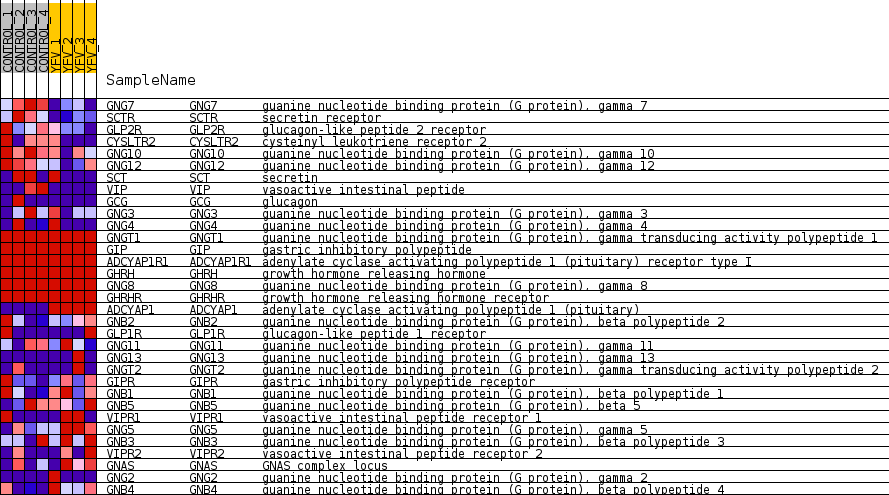
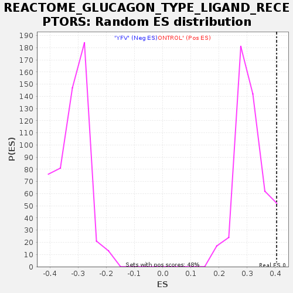

Profile of the Running ES Score & Positions of GeneSet Members on the Rank Ordered List
| Dataset | MATRIZ_GSE99081_collapsed_to_symbols.gsea_CLASE_99081.cls#CONTROL_versus_YFV |
| Phenotype | gsea_CLASE_99081.cls#CONTROL_versus_YFV |
| Upregulated in class | CONTROL |
| GeneSet | REACTOME_GLUCAGON_TYPE_LIGAND_RECEPTORS |
| Enrichment Score (ES) | 0.40495607 |
| Normalized Enrichment Score (NES) | 1.2906425 |
| Nominal p-value | 0.07322176 |
| FDR q-value | 0.96784574 |
| FWER p-Value | 1.0 |
| SYMBOL | TITLE | RANK IN GENE LIST | RANK METRIC SCORE | RUNNING ES | CORE ENRICHMENT | |
|---|---|---|---|---|---|---|
| 1 | GNG7 | guanine nucleotide binding protein (G protein), gamma 7 | 195 | 1.077 | 0.1239 | Yes |
| 2 | SCTR | secretin receptor | 222 | 1.031 | 0.2524 | Yes |
| 3 | GLP2R | glucagon-like peptide 2 receptor | 839 | 0.691 | 0.3016 | Yes |
| 4 | CYSLTR2 | cysteinyl leukotriene receptor 2 | 1260 | 0.581 | 0.3490 | Yes |
| 5 | GNG10 | guanine nucleotide binding protein (G protein), gamma 10 | 1455 | 0.538 | 0.4050 | Yes |
| 6 | GNG12 | guanine nucleotide binding protein (G protein), gamma 12 | 3558 | 0.282 | 0.3109 | No |
| 7 | SCT | secretin | 4159 | 0.230 | 0.3029 | No |
| 8 | VIP | vasoactive intestinal peptide | 6410 | 0.045 | 0.1697 | No |
| 9 | GCG | glucagon | 6477 | 0.040 | 0.1707 | No |
| 10 | GNG3 | guanine nucleotide binding protein (G protein), gamma 3 | 6801 | 0.021 | 0.1534 | No |
| 11 | GNG4 | guanine nucleotide binding protein (G protein), gamma 4 | 6986 | 0.012 | 0.1436 | No |
| 12 | GNGT1 | guanine nucleotide binding protein (G protein), gamma transducing activity polypeptide 1 | 7577 | 0.000 | 0.1072 | No |
| 13 | GIP | gastric inhibitory polypeptide | 7702 | 0.000 | 0.0995 | No |
| 14 | ADCYAP1R1 | adenylate cyclase activating polypeptide 1 (pituitary) receptor type I | 8084 | 0.000 | 0.0760 | No |
| 15 | GHRH | growth hormone releasing hormone | 8755 | 0.000 | 0.0347 | No |
| 16 | GNG8 | guanine nucleotide binding protein (G protein), gamma 8 | 9054 | 0.000 | 0.0163 | No |
| 17 | GHRHR | growth hormone releasing hormone receptor | 9118 | 0.000 | 0.0124 | No |
| 18 | ADCYAP1 | adenylate cyclase activating polypeptide 1 (pituitary) | 9458 | -0.000 | -0.0085 | No |
| 19 | GNB2 | guanine nucleotide binding protein (G protein), beta polypeptide 2 | 9533 | -0.005 | -0.0124 | No |
| 20 | GLP1R | glucagon-like peptide 1 receptor | 9544 | -0.005 | -0.0124 | No |
| 21 | GNG11 | guanine nucleotide binding protein (G protein), gamma 11 | 9682 | -0.011 | -0.0195 | No |
| 22 | GNG13 | guanine nucleotide binding protein (G protein), gamma 13 | 10455 | -0.057 | -0.0600 | No |
| 23 | GNGT2 | guanine nucleotide binding protein (G protein), gamma transducing activity polypeptide 2 | 10875 | -0.091 | -0.0744 | No |
| 24 | GIPR | gastric inhibitory polypeptide receptor | 10990 | -0.101 | -0.0687 | No |
| 25 | GNB1 | guanine nucleotide binding protein (G protein), beta polypeptide 1 | 11255 | -0.125 | -0.0692 | No |
| 26 | GNB5 | guanine nucleotide binding protein (G protein), beta 5 | 11266 | -0.126 | -0.0539 | No |
| 27 | VIPR1 | vasoactive intestinal peptide receptor 1 | 12353 | -0.229 | -0.0920 | No |
| 28 | GNG5 | guanine nucleotide binding protein (G protein), gamma 5 | 13129 | -0.318 | -0.0997 | No |
| 29 | GNB3 | guanine nucleotide binding protein (G protein), beta polypeptide 3 | 13352 | -0.344 | -0.0699 | No |
| 30 | VIPR2 | vasoactive intestinal peptide receptor 2 | 13453 | -0.358 | -0.0308 | No |
| 31 | GNAS | GNAS complex locus | 13777 | -0.407 | 0.0005 | No |
| 32 | GNG2 | guanine nucleotide binding protein (G protein), gamma 2 | 14396 | -0.500 | 0.0255 | No |
| 33 | GNB4 | guanine nucleotide binding protein (G protein), beta polypeptide 4 | 15219 | -0.699 | 0.0629 | No |

